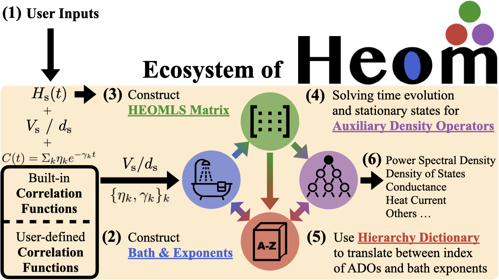

HierarchicalEOM.jl: An efficient Julia framework for Hierarchical Equations of Motion (HEOM) in open quantum systems
HierarchicalEOM.jl is a numerical framework written in Julia. It provides a user-friendly and efficient tool based on hierarchical equations of motion (HEOM) approach to simulate complex open quantum systems, including non-Markovian effects due to non-perturbative interaction with one (or multiple) environment(s). It is built upon QuantumToolbox.jl.
While integrating many of the features present in other open-source HEOM packages, HierarchicalEOM.jl also includes new functionalities, such as the construction of even- and odd-parity HEOM Liouvillian superoperator (HEOMLS) matrices, the estimation of importance values for all auxiliary density operators (ADOs), memory optimization with lazy operators for large-scale systems, and the calculation of spectra for both bosonic and fermionic systems.
By wrapping some functions from other Julia packages (DifferentialEquations.jl, LinearSolve.jl, fastExpm.jl, and SciMLOperators.jl), HierarchicalEOM.jl collects different methods and could further optimize the computation for the stationary state, and the time evolution of all ADOs. The lazy operator feature enables memory-efficient representation of HEOMLS matrices, with memory savings proportional to the number of ADOs, making it possible to simulate larger systems with higher hierarchy tiers. The required handling of the ADOs multi-indexes is achieved through a user-friendly interface called Hierarchy Dictionary.

We believe that HierarchicalEOM.jl will be a valuable tool for researchers working in different fields such as quantum biology, quantum optics, quantum thermodynamics, quantum information, quantum transport, and condensed matter physics.
If you like HierarchicalEOM.jl and find the framework useful in your research, we would be grateful if you could cite our publication [ Communications Physics 6, 313 (2023) ] using the bibtex entry here.